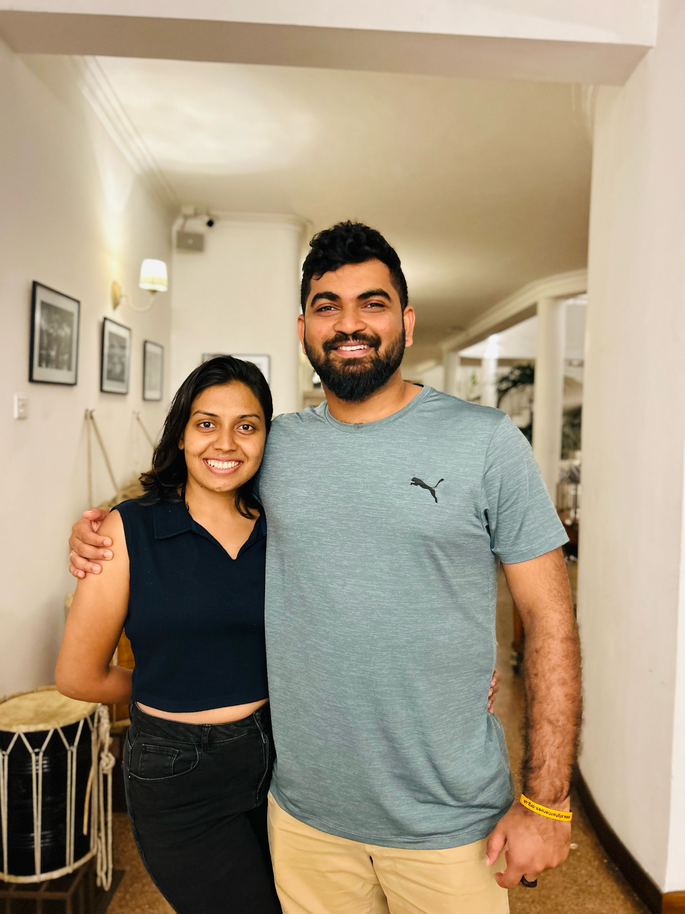

.png)
Family
My Story
A little bit about Gratia
I am an inquisitive Software Engineer with over 3 years of specialized experience in Quality Assurance, encompassing manual and automation testing using tools like Test A Rest, Katalon Studio, and Selenium for both web and mobile environments.
Additionally, I have ventured into Software Development, focusing on IFS ERP solutions in the Supply Chain domain for Aurena Cloud, App10, and App9. I excel in bug handling and troubleshooting for the IFS ERP system and possess solid expertise in SQL-based database structures, particularly PL-SQL.
My excellent interpersonal and communication skills, coupled with proficiency in the complete software development life cycle, make me an asset in Agile development environments and cross-functional teams.
I am passionately driven to continuously learn and grow, always aiming to challenge yesterday's self with today's better self.
Information
Education
2017 — 2020
BEng Software Engineering, University of Westminster
- Grade: First class honors
- Activities and societies: IEEE, Women In Engineering
2008 — 2015
High School, Taxila central College
- GCE Ordinary Level Examination - 2012
- GCE Advanced Level Examination - 2015 (Mathematics stream)
Companies I've had worked


Employement History
-
IFS Technical Consultant
Bitzify, Kandy
Nov 2023 - Present
Involved in Customization development using Aurena Client, IFS Configurations/ Customizations/ Data Migrations/ Reports handling/ Flow Automation/ Bug correction support process.
Also took part in developments related to enhancing Supply Chain, Finance, and Purchase functionalities in IFS Cloud.
-
Software Quality Assurance Engineer
IFS, Colombo
Oct 2020 - Oct 2023
Involved in test strategy and test plan creation, maintaining a regression test suite (TAR and Katalon Studio), preparing QA test estimation for test activities, designing and executing test cases, coordinating the App-10 product releases, technical design, and developing fit-for-purpose software based on functional and technical requirements, create documents, presentations, and training materials.
Also took part in developments and support issue resolution (Within the IFS framework and PL-SQL) while supporting root cause analysis and shift left testing.
-
Software Quality Assurance Engineer - Freelancer
FNT Portal
May 2023 - Dec 2024
Involved in manual testing on a retail product before going to production and documented the bugs and provided an effective bug report.
-
Software Engineering Trainee
hSenid Mobile Solutions (Pvt) Ltd, Colombo
Jul 2018 - Jul 2019
Involved in preparing UAT documents and presenting the daily status report to the Project Manager to ensure coordination, UI, and compatibility testing (Desktop/Android/iOS), Writing detailed test cases, creating Test plans, and executing them, In-depth quality assurance reviews on software, including Functional testing, Regression Testing, Performance testing, Integration Testing, Back-end testing, and finding all bugs and taking careful notes on how they can be reproduced.
Also took part in feature development and support issue resolution using SpringBoot framework with Java
Milestones
Supplier Warranty Enhancement for IFS
Purpose
IFS currently supports Supplier Warranty for serialized parts via a Supplier Warranty Type Template. HAL requires extending this to Lot Batch Parts and allowing different warranty start dates (e.g., date of landing, inspection, or installation).
- Business Requirements & Modifications:
- Warranty Flexibility: Allow different start date options (e.g., delivery, installation) and support top-up warranties.
- Data Capture Enhancements: Enable capturing warranty start date, inspection date, expiration, preservation, and manufacture dates in the Receipt Voucher (RV) process.
- Alerts & Communication: Provide pre-alerts for warranty coverage during MRB, PO processing, and dispatch.
- Supplier & Customer Warranty Integration: Extend supplier warranty to customers and generate alerts on remaining warranty during dispatch.
- Serialized & Non-Serialized Support: Capture supplier warranty for both serialized and non-serialized items.
- Repair & Replacement Handling: Ensure seamless warranty claim processing, including PO references for replacements, RV reversals for faulty items, and tracking of replaced parts.
- Customization & Configuration: Introduce custom fields for denied warranty reasons, warranty conditions, and different measurement units (days, months, hours flown, etc.).
- Exceptions & Special Cases:
- Warranty Replacement & Cost Management: Ensure proper handling of cost calculations for warranty replacements (e.g., CAT-A part replacements, customs duties on new parts).
- Repair PO & Serial Number Tracking: Ensure repaired items match original serial numbers unless changed, with reasons recorded.
- Warranty Contingency Consideration: Factor warranty contingencies in adequacy planning and demand forecasting.
This project enhances warranty management in IFS, improving tracking, flexibility, and integration with business processes.
Package Management System Enhancements
As a team member, I actively contributed to the development and implementation of key features in our Package Management System, addressing critical requirements:
- Introduction of Handling Unit Status: We implemented a crucial feature by introducing a status for each handling unit ID. This was particularly important because handling units could either be consumed and never reused or, in the case of reusable handling units, they might temporarily exit inventory during delivery and return later. The status feature served to indicate the potential for handling unit reuse and whether a handling unit was within inventory (for tracked handling units) or had been delivered to other entities and was expected to return at a later date.
These enhancements significantly improved the efficiency and traceability of our Package Management System, ensuring better control over package material supplies and the status of handling units.
Refill Remote Warehouse using Shipment Order
The purpose of this epic is to extend functionality for the remote warehouse, specifically focusing on the refill process. This enhancement involves adding a shipment order as an additional option for refilling the remote warehouse, which brings several advantages:
- Utilizing a shipment order allows for a more comprehensive approach to the delivery process, including pick and pack operations and transport documentation.
- This approach treats the refill as a demand for the centralized warehouse and permits the creation of shipment orders even when there is no quantity on hand for the specific part.
- The use of putaway functionality for refilling remote warehouses has proven to be complex and comes with several challenges, including:
- Originally designed for optimizing storage, putaway only allows the reservation of available stock for refills.
- Customers have reported performance issues when using putaway for remote warehouse refills.
- Transport tasks lack a shipment process to support it, such as packing and shipping documents.
- Transport tasks immediately reserve serial-numbered parts and do not support the "Pick By Choice" method.
This user story focuses solely on the refill functionality, and any move with a shipment order will be addressed separately. The goal is to simplify and enhance the remote warehouse refill process, making it more efficient and versatile for various warehouse management scenarios.
IFS Test-A-Rest
IFS Test-A-Rest is a versatile tool designed for testing IFS OData RESTful APIs and loading test data using simple script files. It offers a range of important capabilities, making it a valuable resource for developers and testers:
- Create, Modify, and Read Data: IFS Test-A-Rest allows users to interact with IFS OData APIs, enabling the creation, modification, and retrieval of data.
- Parameter Support: The tool supports parameters in both URL and body payloads, providing flexibility in API testing.
- Expression Evaluation: Users can evaluate expressions using a C# syntax, allowing for dynamic and complex testing scenarios.
- Assertions: IFS Test-A-Rest enables the assertion of conditions, helping ensure the accuracy and reliability of API responses.
- Script Modularity: Users can call other scripts, allowing for the division of larger tests into smaller, more manageable units.
- Authentication Support: The tool offers support for authentication, ensuring secure access to APIs.
- Cross-Platform Compatibility: IFS Test-A-Rest is built on .NET Core 3.1, making it compatible with both Windows and Linux environments.
Inventory Scrap Approval Enhancement for IFS
Purpose
A two-level approval process (Stores & Finance) is required before scrapping inventory in the Scrap Location. The standard inventory scrapping process will be disabled.
- Business Requirements & Modifications:
- Approval Process:
- Two-level approval is mandatory for scrapping parts and reversing items from the salvage store.
- Note sheet approval is required before initiating the scrap process.
- Direct scrapping from inventory will be disabled.
- Salvage Process:
- The salvage process is partially standard in IFS and requires modifications for proper authorization.
- Approval Process:
- Functional Solution Description:
- Scrap Header Creation: Capture mandatory details (Coordinator, Site, Location) and assign a system-generated Scrap Order Number with "Planned" status.
- Location Selection: Only locations under the 'Scrap' group with 'Scrap' Availability Control ID will be available.
- Scrap Inventory Lines: Fetch all parts in the selected scrap location from inventory.
- Total Scrap Value Calculation: Auto-calculate based on selected lines.
- Validation & Approval: Ensure the Total Scrap Value does not exceed the approved note sheet value; otherwise, display an error.
- Scrap Execution: Once approved, enable the Scrap button, require a scrap reason, and update the document status to "Closed" with a recorded history of user actions.
This enhancement ensures better control, transparency, and compliance in the scrap approval process.
Oil & Gas Replication Messages in Supply Chain
Offshore rigs and other remote businesses often face system unavailability and performance issues due to connectivity challenges. These locations have limited access to Wi-Fi, making it difficult to transmit and receive messages to update databases. The main goal of the Replication project is to ensure efficient daily use of IFS Applications in such environments.
- Main Goals of Replication:
- Make required data available in a replicated environment for daily use of IFS Applications.
- Provide a stable, reliable solution for organizations and customers with unreliable data communication lines.
- Minimize the need for substantial day-to-day operational support.
- Replication Process:
- Data replication occurs at the application level.
- The solution replicates master data (basic data) and transactional data between onshore sites and offshore vessels, drilling rigs, etc.
- Each offshore vessel or rig is configured as a "Site" within IFS Applications.
- Each offshore database has a corresponding onshore copy, ensuring synchronization of business-critical data and transaction updates.
- Different number ranges per database allow all databases to create Business Objects simultaneously.
This comprehensive replication solution significantly improves data reliability and accessibility for offshore operations, making it an essential component of the supply chain in the Oil & Gas industry.
Operations Procurement under Offshore Contracts (Dual Company Procurement)
Dual Company Procurement is a solution designed for replenishment-related contractual arrangements in asset-intensive Offshore businesses, such as Oil & Gas. In this scenario, an Asset Owning company oversees maintenance and supply chain planning to optimize asset uptime, while an Asset Operating company is financially responsible for replenishment during the contract period.
This solution ensures that material flow is managed within one site and company (the asset owner), while the financial responsibility for material replenishment, including purchase orders, receipts, supplier invoices, and payments, falls under the jurisdiction of the operative site and company.
Initial investigations indicate that extending functionality for multi-company invoicing and centralized purchasing is essential to support the requirements of this epic. Key considerations include:
- Many of the necessary financial postings are already part of the multi-company invoicing functionality.
- The operative company should not require a full set of basic data for parts, inventory locations, etc., related to material flow. Setting up this data on the asset-owning company and site should suffice (a limitation in centralized purchasing that requires both sites to have basic data for parts).
- Further investigations are needed regarding address handling across different companies.
- Currency and currency rates for invoice payment should be sourced from the financial company.
- Taxes require additional investigations, considering part-related and address-related aspects. Tax rules should be derived from the operative site/company.
Expertise and Interests
Technologies
HTML | CSS | JavaScript | Bootstrap | Java | SpringBoot | PostgreSQL | MySQL | MongoDB | PLSQL | Katalon Studio | Selenium Webdriver | Cypress | IFS ERP | IFS Cloud | IFS App 10 | IFS App 9
Skills
Agile | Manual Testing | Test Automation | Jira Service Management | Jenkins | Bitbucket | Bugzilla&Testopia | HP Application Lifecyple Management | MsOffice | MsExcel | Presentation | Leadership | Teamwork | Analytical skills | Quality Assurance Processes
Skill Tests Taken
Interests
Say Hi
I’m available for freelance projects too
Software Engineer in Quality Assurance | Software Development, Test Automation, Support Bug Resolution, Agile Methodologies | I Help to Deliver High-Quality Software with Faster Release Cycles
LanguagesEnglish | Sinhala
Email Call